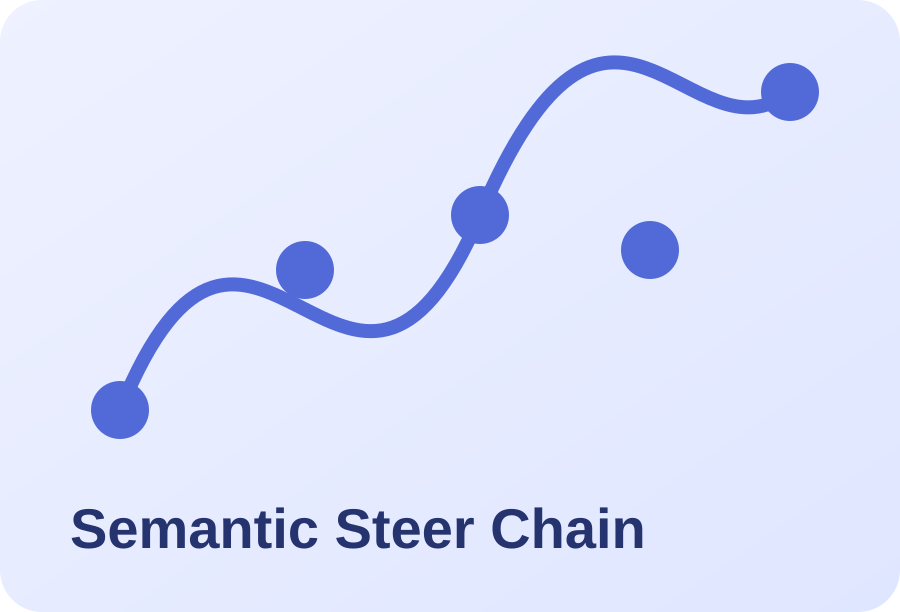

Hi, I’m Guojiao Zhao.
I am an undergraduate student majoring in Electrical and Computer Engineering at Shanghai Jiao Tong University, expecting to graduate in June 2027. My research interests lie at the intersection of agentic AI, optimization and decision-making, LLM security and red teaming, and machine learning.
I have worked on black-box LLM jailbreaking, and on lightweight vision models for facial expression recognition. I am particularly interested in building AI agents that can reason, plan, and make reliable decisions under complex constraints.
Current interests: agentic methods for optimization & decision-making · LLM/agent security · computer vision · recommender systems
Research
Selected publicationsLLMamba-Net: A Lightweight Network Integrating Linear Mamba for Facial Expression Recognition
PRCV 2025Research Experience
2025–2026
Black-box LLM Jailbreaking & Red Teaming
Developed SSC, an adaptive semantic-approximation framework for efficient black-box jailbreaking. Research advised in part by Prof. David Woodruff at Carnegie Mellon University.
2025
Lightweight Computer Vision / Facial Expression Recognition
Contributed to LLMamba-Net, a lightweight facial-expression-recognition architecture integrating linear Mamba modules.
Under going
Agentic AI for Optimization & Decision-Making
Dive into agentic AI methods for optimization and decision-making, exploring how LLMs can be leveraged to solve complex problems with constraints. Research advised in part by Prof. Ruihao Zhu at Cornell University.
Education
Academic backgroundExpected Jun. 2027
Shanghai Jiao Tong University
Bachelor's student in Electrical and Computer Engineering. Ranking top 10%.
2026 Spring
Cornell University
Exchange student in Electrical and Computer Engineering.